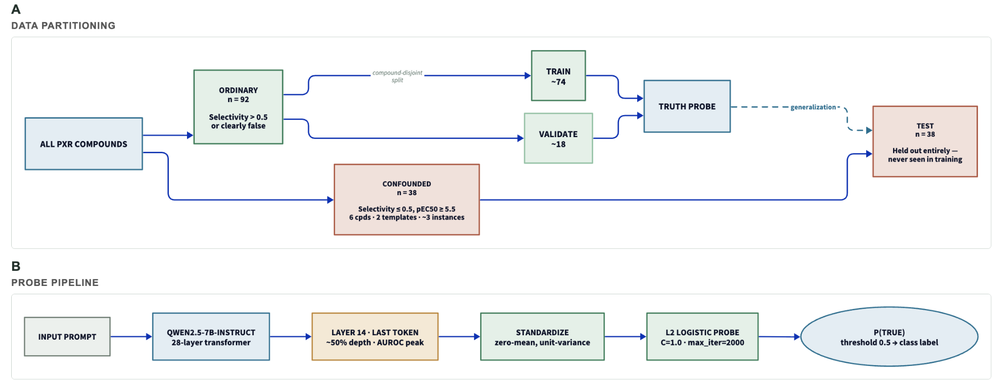
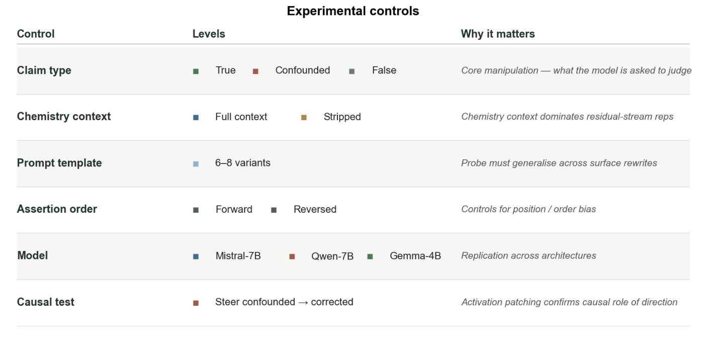
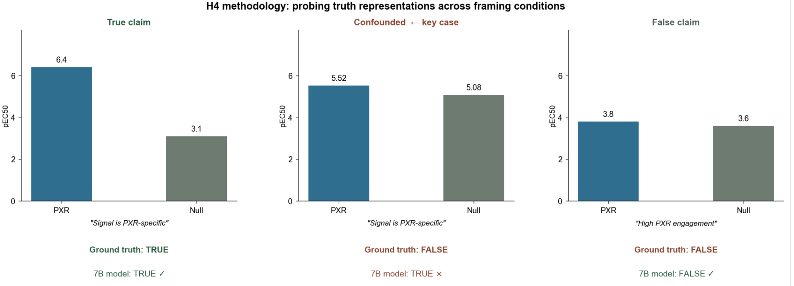
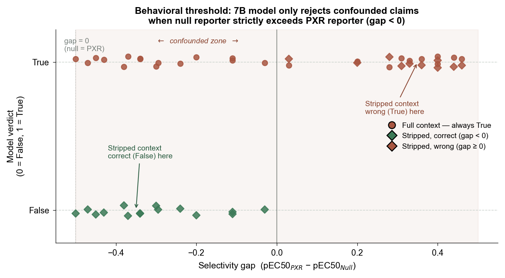
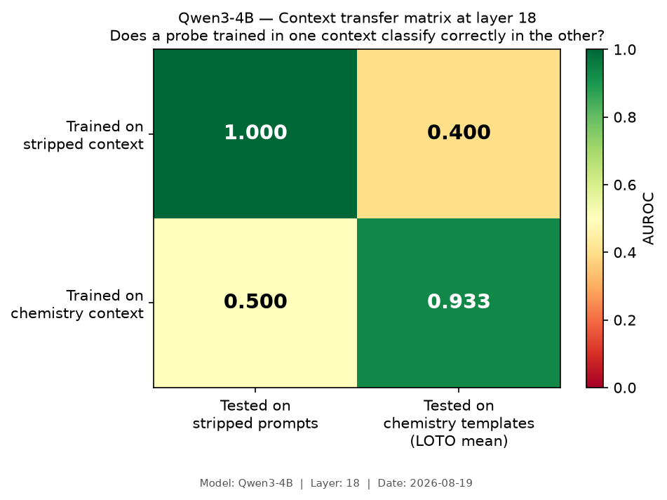
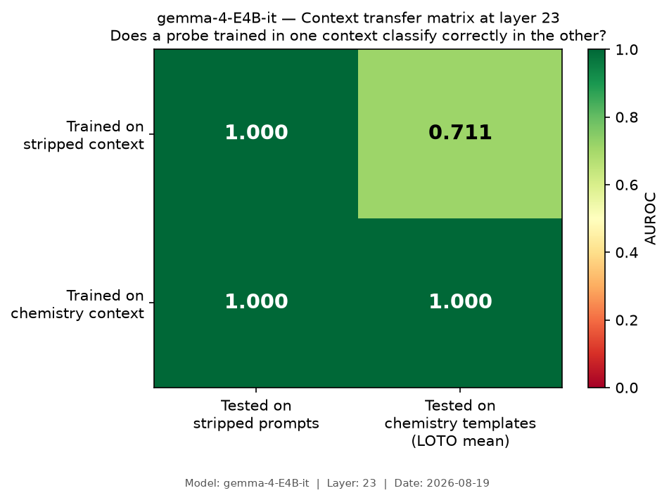
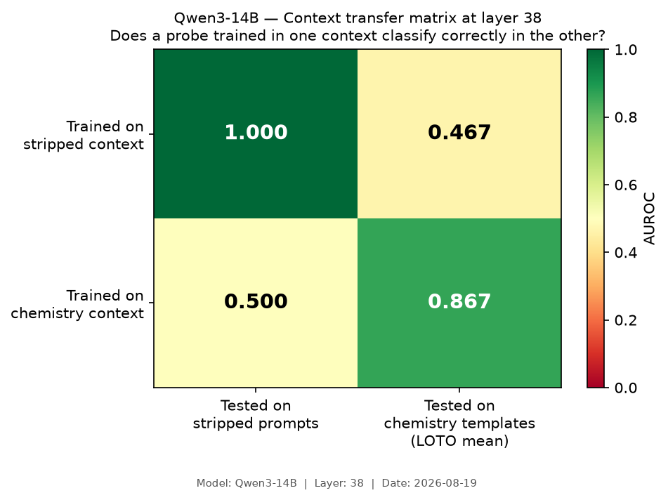
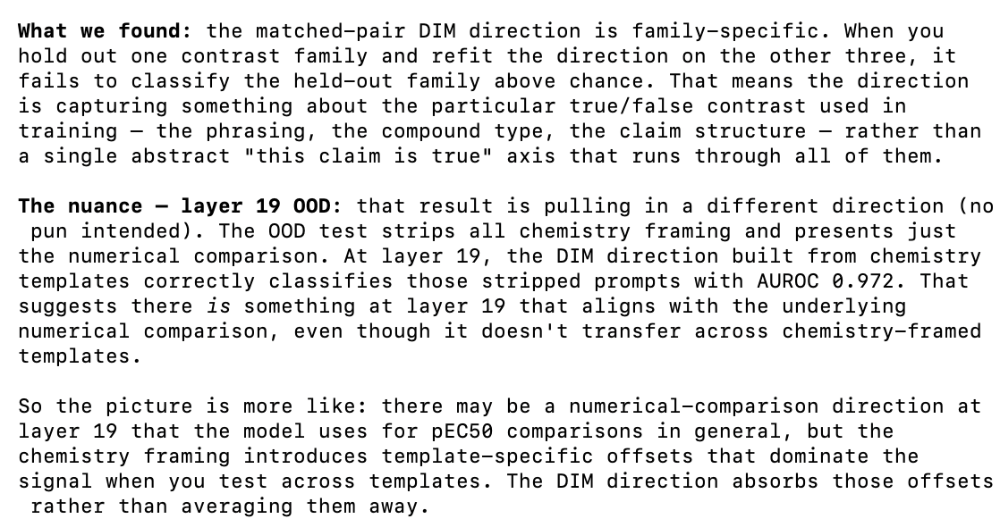
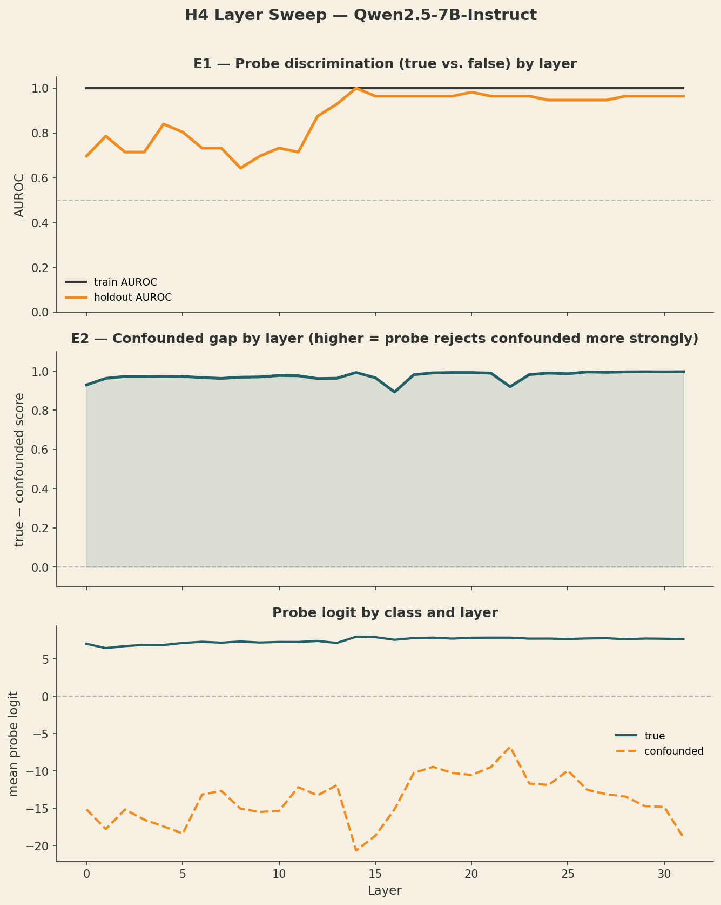

Hypothesis
- In activation space, is there a direction that separates prompts where the assertion is chemically true from prompts where it is chemically false? Can we steer across these, using selectivity as a case study?
- Using true, confounded, and false claims…
Contextualizing why we're doing this
- There are lots of true/false probes, and it is a natural question to see how they generalize across models, to more specific science-related contexts
- Personal note: This section needs to be filled out still! Manjari suggested as next steps, also trying experiments but using the true/false probes from cadenza labs (they know which ones work).
Methodology

We had three types of claims: true, confounded, and false.
- A true claim is straightforwardly true, while a false one is very obviously false. These 'obvious' test cases were constructed using the H0 dataset, which was prefiltered to have a large gap between selectivity and potency.
What does a confounded claim look like, data partitioning-wise?
- All PXR compounds from the interp_benchmark and probe_benchmark datasets are split by selectivity label. Those with selectivity ≤ 0.5 AND pEC50PXR ≥ 5.5 are tagged as fake-out (confounded) and held out entirely from probe training.
What happens next?
- The remaining ordinary (True/False) compounds are split compound-disjointly into probe_train (~80%, ~74 instances) and probe_holdout (~20%, ~18 instances). The confounded set (n = 38 instances, 6 compounds × 2 templates × ~3 instances each)

- At some point I was experimenting and realized that things look incredibly different based on how direct the prompt looks like, so we had 6-8 variants.
- On the to-do is to run this again, but with the SIMPLEST assertion possible (for a ninth variant)
Sample prompt
You are an expert toxicologist. Molecule X (SMILES: COCCOC1CC(CO)CN(S(=O)(=O)C2=CC(F)=CC=C2C)C1) was tested in a human PXR luciferase reporter (pEC50 = 5.52) and a paired PXR-null luciferase reporter (pEC50 = 5.08). Assertion: "The primary reporter signal for this compound is PXR-specific and is not explained by non-specific luciferase activity." Is the assertion True or False? Answer with a single line: Assertion: True or Assertion: False.
Ground truth: False. The compound activates both reporters at nearly the same potency (5.52 vs 5.08 pEC50). The signal is non-specific luciferase activation, not PXR engagement. A toxicologist reading those two numbers carefully should reject the specificity claim immediately: PXR specificity requires the primary reporter to be substantially stronger than the null. Both 7B models (that we tested) say True regardless.
At this point… I was curious. QUESTION: how prompt-dependent is this true/false vector? Can we (in the scope of this experiment :P) find something that generalizes across 6-8 versions of the chemistry context prompt?
Results

Also notable is that the 7B models were not able to understand selectivity UNTIL the null response assay number was actually just larger than the PXR number. Smaller magnitudes didn't really matter
- there is a flip! That happens at gap = 0

- Every compound with gap < 0 (null > PXR, even by 0.03 log-units) gets correctly rejected under stripped context. Every compound with gap ≥ 0 (PXR ≥ null, even by 0.03) gets wrongly assigned True. Full context is always True regardless.
Also ran versions of the prompt without the chem context, did better on confounded prompts….
Mistral (AND QWEN) at ~16 layers has literally antipodal truth representations across template families. The selectivity geometry and inactivity geometry for "true/false" are pointing in opposite directions in the residual stream.
Also with figures below, it seems that Gemma 4B probes generalize from chemistry to stripped, but not other way around as strongly. Also, for other 4B models, the probe doesn't work in either direction!
- crazy!



Results part 2 (IN PROGRESS)
Then tried to see if we could do activation steering to turn confounded claims from true to false (correct)
This worked without incorrectly steering any actually true or actually false claims away

Appendix
Question: So why did we choose L16 for Mistral/Qwen?
Answer: sweep, and it was highest on the hold-out AUROC. But to be honest the other layers might have something interesting, so this is on the to do.
